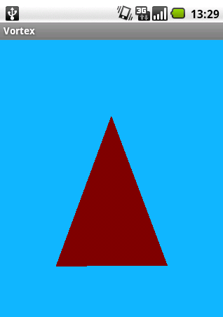
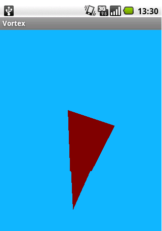
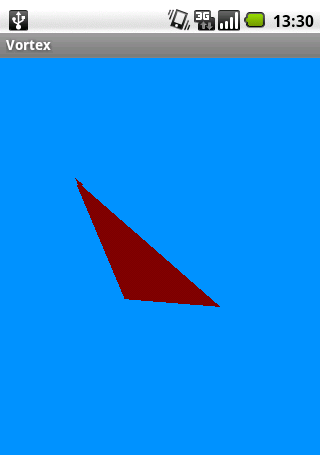

Android 3D游戏开发（三）
这时候我们可以绕y轴旋转。如果需要改变只需要改变glRotate()方法中的0f。这个参数中的值表示一个向量，标志三角形绕着旋转的坐标轴。
要让它可用，我们必须在VortexView中的onTouchEvent()中添加一个调用。
public boolean onTouchEvent(final MotionEvent event) { queueEvent(new Runnable() {
public void run() {
_renderer.setColor(event.getX() / getWidth(), event.getY()
/ getHeight(), 1.0f);
_renderer.setAngle(event.getX() / 10);
}
});
return true;
}
上面代码中除以10是为了减小角度变换的速度。
现在编译运行这个程序。如果你在屏幕的最左边点击，你会看到三角形轻微旋转。如果你将手指移到右边，旋转的速度就会变得很快。
效果图：



在这个系列的第三部分给你show一下如何停止三角形的转动，并告诉你原来的旋转其实只是在三角形上进行的旋转，而不是在摄像机“camera”上进行的旋转。